library(ggplot2)
library(dplyr)set.seed(42)When we looked at correlation, we said that we could tell the strength of an association and we could tell if the association was positive or negative. We could also test the probability that two numeric variables would be correlated if the true population correlation was actually 0.
We can also use a linear regression to get this information. Let’s look at how by loading our spurious correlation from the last lesson:
sp_cor <- data.frame(
year = factor(2005:2009),
cage_films = c(2, 3, 4, 1, 4),
fem_editors = c(9, 14, 19, 12, 19)
)
head(sp_cor)## year cage_films fem_editors
## 1 2005 2 9
## 2 2006 3 14
## 3 2007 4 19
## 4 2008 1 12
## 5 2009 4 19str(sp_cor)## 'data.frame': 5 obs. of 3 variables:
## $ year : Factor w/ 5 levels "2005","2006",..: 1 2 3 4 5
## $ cage_films : num 2 3 4 1 4
## $ fem_editors: num 9 14 19 12 19cor.test(sp_cor$cage_films, sp_cor$fem_editors)##
## Pearson's product-moment correlation
##
## data: sp_cor$cage_films and sp_cor$fem_editors
## t = 2.861, df = 3, p-value = 0.06452
## alternative hypothesis: true correlation is not equal to 0
## 95 percent confidence interval:
## -0.1093485 0.9903012
## sample estimates:
## cor
## 0.8554467mod <- lm(sp_cor$cage_films ~ sp_cor$fem_editors)
summary(mod)##
## Call:
## lm(formula = sp_cor$cage_films ~ sp_cor$fem_editors)
##
## Residuals:
## 1 2 3 4 5
## 0.6218 0.3523 0.0829 -1.1399 0.0829
##
## Coefficients:
## Estimate Std. Error t value Pr(>|t|)
## (Intercept) -0.90674 1.34172 -0.676 0.5476
## sp_cor$fem_editors 0.25389 0.08874 2.861 0.0645 .
## ---
## Signif. codes: 0 '***' 0.001 '**' 0.01 '*' 0.05 '.' 0.1 ' ' 1
##
## Residual standard error: 0.7797 on 3 degrees of freedom
## Multiple R-squared: 0.7318, Adjusted R-squared: 0.6424
## F-statistic: 8.185 on 1 and 3 DF, p-value: 0.06452The linear regression, lm(), output is pretty complex compared to the Pearson correlation test output. But we can find some similar numbers. If you look at the part that say Coefficients:, you’ll see sp_cor$fem_editors and then a row of numbers. The last two match the t-value and p-value that the correlation test produced, so that’s good (we’ll go into more detail about interpreting the linear model results below).
But where’s our correlation coefficient? The second to the last line has `Multiple R-squared: 0.7318". If you take the square root of that value, you get the same correlation coefficient that we saw in the Pearson correlation test.
sqrt(summary(mod)$r.squared)## [1] 0.8554467Now, technically, the square root of the \(R^2\) value is the correlation coefficient \(r\) if the two variables have the same standard deviation. So, why would we use a linear model? The output is less clear and we don’t directly get a correlation coefficient!
Remember the limitations of the correlation test. Correlation just measures the strength of association. A linear regression allows you to quantitatively measure the effect of a “predictor” (remember that term? aka dependent variable) on a “response” (aka independent variable). This does require us to make a claim about the direction of the effect. Here, Nicolas Cage films are predicted by the number of female editors at the Harvard Law Review. In this example, the direction doesn’t really make sense. Had we reversed the direction we would have gotten a different model but we would have seen similar results.
Remember, our causal model might not make any sense, but we are making claim about causality.
mod <- lm(sp_cor$fem_editors ~ sp_cor$cage_films)
summary(mod)##
## Call:
## lm(formula = sp_cor$fem_editors ~ sp_cor$cage_films)
##
## Residuals:
## 1 2 3 4 5
## -3.2941 -1.1765 0.9412 2.5882 0.9412
##
## Coefficients:
## Estimate Std. Error t value Pr(>|t|)
## (Intercept) 6.529 3.056 2.137 0.1222
## sp_cor$cage_films 2.882 1.007 2.861 0.0645 .
## ---
## Signif. codes: 0 '***' 0.001 '**' 0.01 '*' 0.05 '.' 0.1 ' ' 1
##
## Residual standard error: 2.627 on 3 degrees of freedom
## Multiple R-squared: 0.7318, Adjusted R-squared: 0.6424
## F-statistic: 8.185 on 1 and 3 DF, p-value: 0.06452The formula = argument (the first argument) in lm() is written as y ~ x and can be read as “\(y\) is predicted by \(x\)”. In observational studies, we would not want to make a claim about causation, but we can still use the linear model to make predictions and quantify how much of an effect the predictor has on the response variable. E.g., for every increase in one Nic Cage films, we should expect 2.88 more HLR female editors.
A linear regression gives us a lot more information in experimental settings. In a properly set up experiment, you make claims about causality using a linear model. Another benefit? You can extend a simple linear model to include multiple numeric and categorical predictors. T-tests, ANOVAs, Chi-square tests, etc. are all variants of linear models!
In layman’s terms, a simple linear regression models the relationship between two numeric variables by fitting a line through the data. Using that line, you can predict \(y\) from \(x\).
x <- seq(from = -10, to = 10, by = 2)
y <- x + 1
ggplot(data.frame(x, y), aes(x, y))+
geom_point()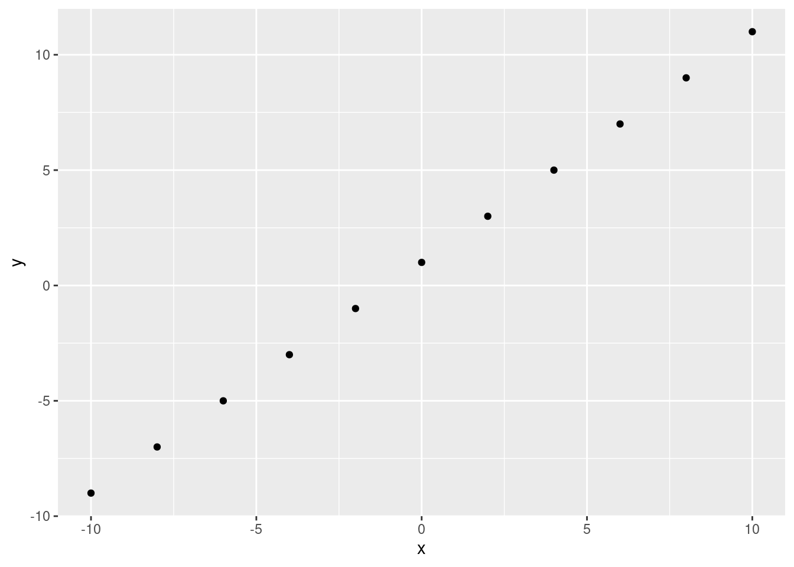
If we have a perfect correlation, this is easy. We can fit a line through the data points:
ggplot(data.frame(x, y), aes(x, y))+
geom_point() +
geom_abline(slope = 1, intercept = 1)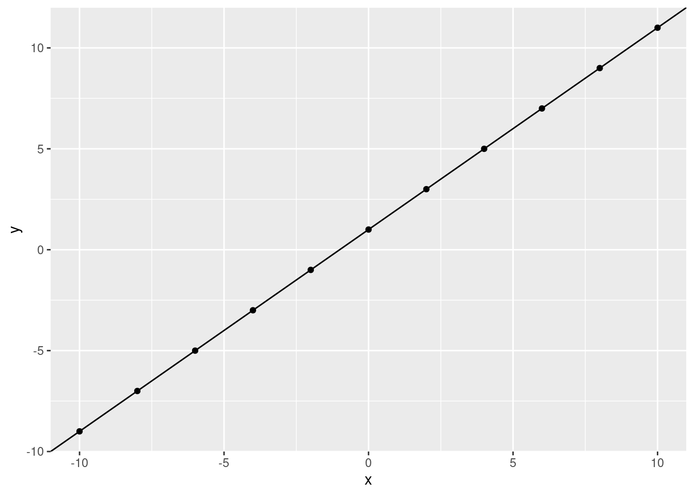
What would we predict, \(y\) to be if \(x\) is 5? Let’s use the line:
ggplot(data.frame(x, y), aes(x, y)) +
geom_point() +
geom_abline(slope = 1, intercept = 1) +
geom_vline(xintercept = 5)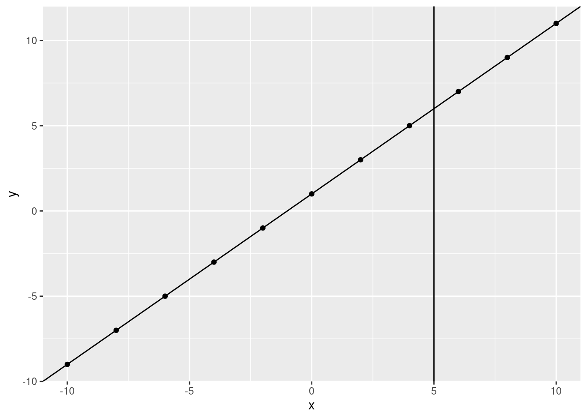
What is the \(y\) value when the fitted line crosses 5?
ggplot(data.frame(x, y), aes(x, y)) +
geom_point() +
geom_abline(slope = 1, intercept = 1) +
geom_vline(xintercept = 5) +
geom_hline(yintercept = 6) +
geom_point(aes(x = 5, y = 6), size = 10, shape = 21, color = "red") +
scale_y_continuous(breaks = c(seq(from = -10, to = 10, by = 2)))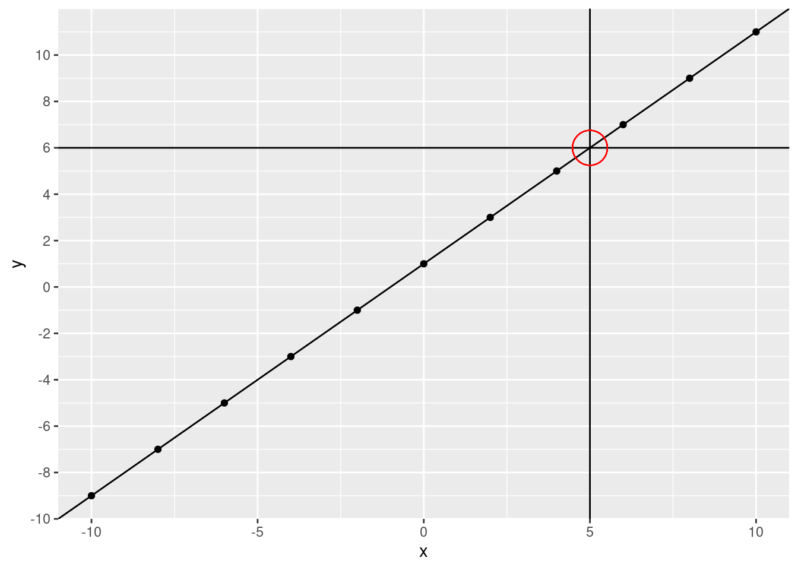
We can use our linear model to directly calculate our predicted value.
slope <- 1
intercept <- 1
predicted_y <- 5 * slope + intercept
predicted_y## [1] 6It matches our visual calculation!
For those of you that remember algebra class (so, not me) this equation might look familiar, it’s \(y = mx + b\) (or \(y = ax + b\)). If you don’t know this, don’t worry, it’s pretty simple. The equation is just what we did above with the plot. You can get a \(y\) value by multiplying an \(x\) value by the slope and adding the intercept. Even simplified that might be quite a bit. What is the intercept? The intercept is the \(y\) value when \(x\) is at 0 (technically, this is the y-intercept). That is, where the line crosses 0 on the x-axis. What is our intercept?
ggplot(data.frame(x, y), aes(x, y)) +
geom_point() +
geom_abline(slope = 1, intercept = 1) +
geom_vline(xintercept = 0) +
geom_hline(yintercept = 1) +
geom_point(aes(x = 0, y = 1), size = 10, shape = 21, color = "red") +
scale_y_continuous(breaks = c(seq(from = -9, to = 9, by = 2)))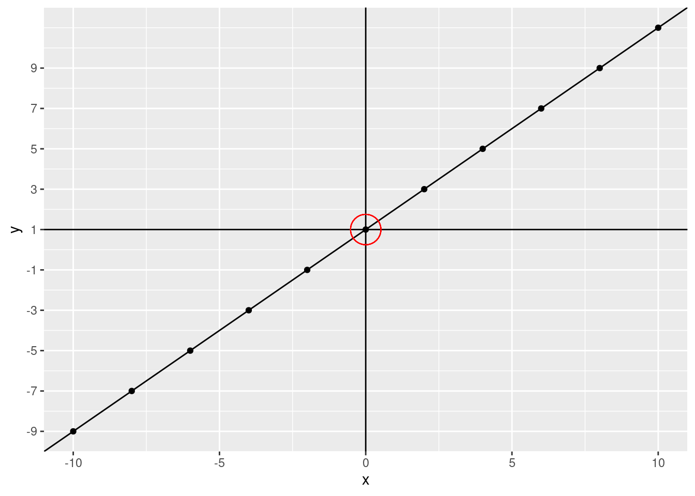
What happens if we change the intercept? Let’s change it to -5 (we’ll keep the original data points and fitted line on the plot)
ggplot(data.frame(x, y), aes(x, y)) +
geom_point() +
geom_abline(slope = 1, intercept = 1) +
geom_abline(slope = 1, intercept = -5, color = "blue", linetype = 2) +
geom_vline(xintercept = 0) +
geom_hline(yintercept = -5) +
geom_point(aes(x = 0, y = -5), size = 10, shape = 21, color = "red") +
scale_y_continuous(breaks = c(seq(from = -9, to = 9, by = 2)))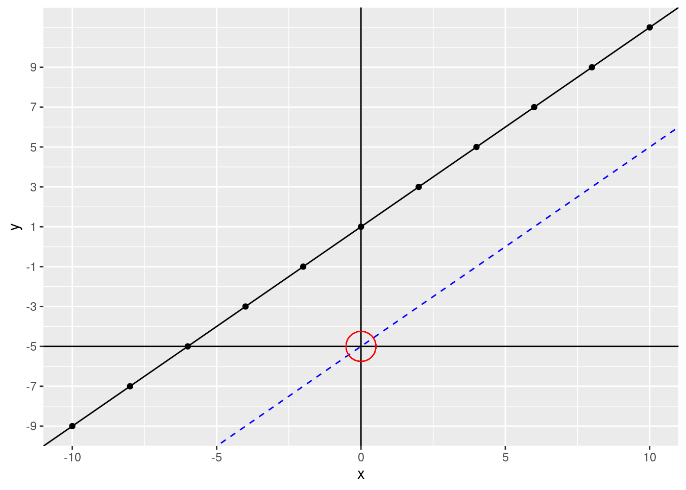
The line moves down. If our intercept were 5, the line would move up. Notice, however, that the lines are perfectly parallel to each other. This is because we didn’t change the slope. The slope tells us how much \(y\) changes for every increase of \(x\). What was our slope in our fitted line? Let’s zoom in a bit.
ggplot(data.frame(x, y), aes(x, y)) +
geom_point() +
geom_abline(slope = 1, intercept = 1) +
scale_x_continuous(breaks = c(seq(from = -5, to = 5, by = 1))) +
scale_y_continuous(breaks = c(seq(from = -5, to = 5, by = 1))) +
coord_cartesian(ylim = c(-5, 5), xlim = c(-5, 5))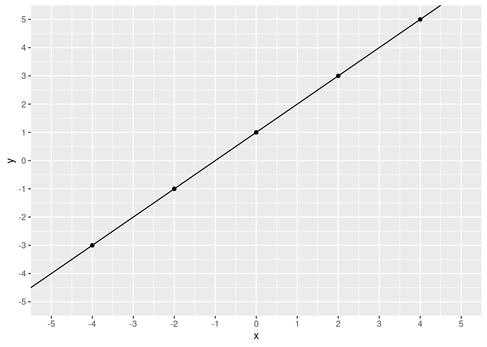
Starting at 0, let’s increase 1 unit of \(x\).
ggplot(data.frame(x, y), aes(x, y)) +
geom_point() +
geom_abline(slope = 1, intercept = 1) +
scale_x_continuous(breaks = c(seq(from = -5, to = 5, by = 1))) +
scale_y_continuous(breaks = c(seq(from = -5, to = 5, by = 1))) +
coord_cartesian(ylim = c(-5, 5), xlim = c(-5, 5)) +
annotate(
geom = "segment", x = 0, xend = 1, y = 1, yend = 1,
arrow = arrow()
)Now we find where the line crosses our new \(x\) value.
ggplot(data.frame(x, y), aes(x, y)) +
geom_point() +
geom_abline(slope = 1, intercept = 1) +
scale_x_continuous(breaks = c(seq(from = -5, to = 5, by = 1))) +
scale_y_continuous(breaks = c(seq(from = -5, to = 5, by = 1))) +
coord_cartesian(ylim = c(-5, 5), xlim = c(-5, 5)) +
annotate(geom = "segment", x = 0, xend = 1, y = 1, yend = 1) +
annotate(
geom = "segment", x = 1, xend = 1, y = 1, yend = 2,
arrow = arrow()
)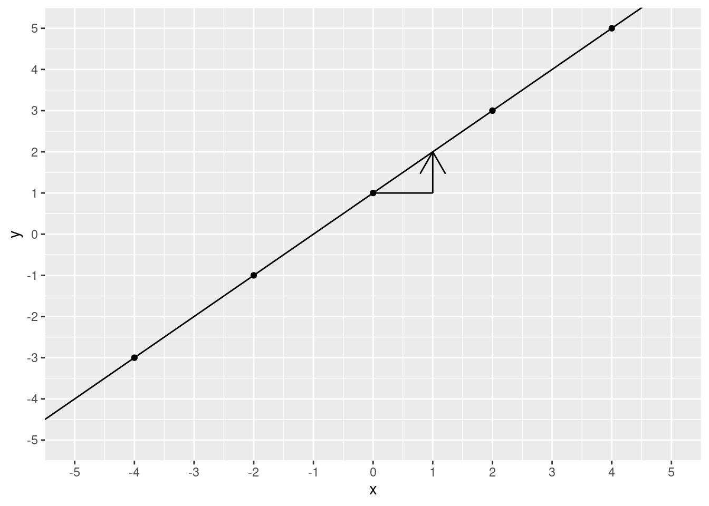
What is the \(y\) value?
ggplot(data.frame(x, y), aes(x, y)) +
geom_point() +
geom_abline(slope = 1, intercept = 1) +
scale_x_continuous(breaks = c(seq(from = -5, to = 5, by = 1))) +
scale_y_continuous(breaks = c(seq(from = -5, to = 5, by = 1))) +
coord_cartesian(ylim = c(-5, 5), xlim = c(-5, 5)) +
annotate(geom = "segment", x = 0, xend = 1, y = 1, yend = 1) +
annotate(geom = "segment", x = 1, xend = 1, y = 1, yend = 2) +
annotate(geom = "segment", x = 1, xend = -6, y = 2, yend = 2, linetype = 3)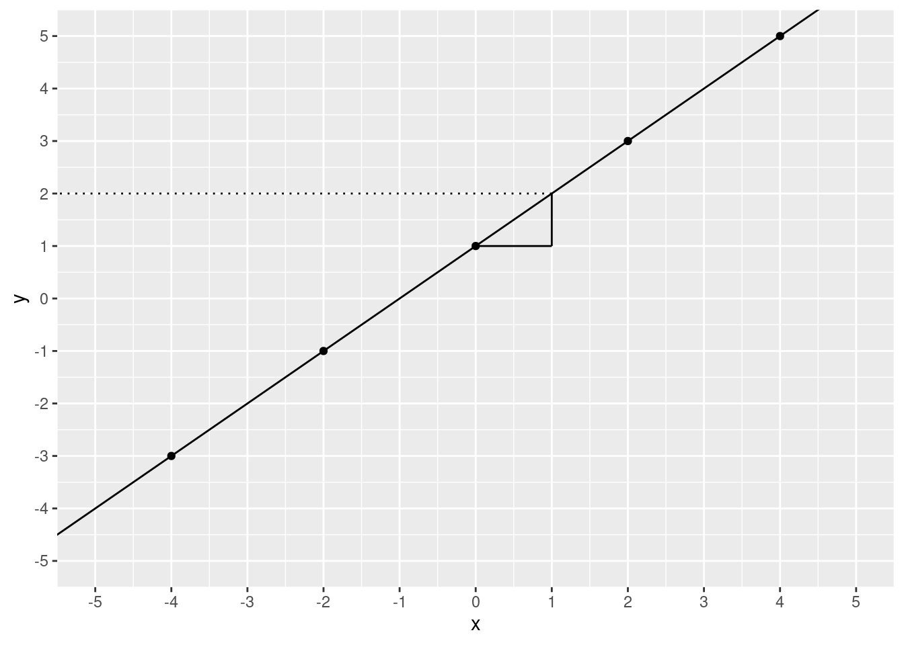
2! We moved 1 step over and 1 step up. To calculate slope, you take the “rise over run”. That is, the increase in \(y\) divided by the increase in \(x\). In this case, that’s pretty simple it’s \(\frac{1}{1}\), which is 1.
ggplot(data.frame(x, y), aes(x, y)) +
geom_point() +
geom_abline(slope = 1, intercept = 1) +
scale_x_continuous(breaks = c(seq(from = -5, to = 5, by = 1))) +
scale_y_continuous(breaks = c(seq(from = -5, to = 5, by = 1))) +
coord_cartesian(ylim = c(-5, 5), xlim = c(-5, 5)) +
annotate(geom = "segment", x = 0, xend = 1, y = 1, yend = 1) +
annotate(geom = "segment", x = 1, xend = 1, y = 1, yend = 2) +
annotate(geom = "text", x = 0.5, y = 0.5, label = "1") +
annotate(geom = "text", x = 1.5, y = 1.5, label = "1")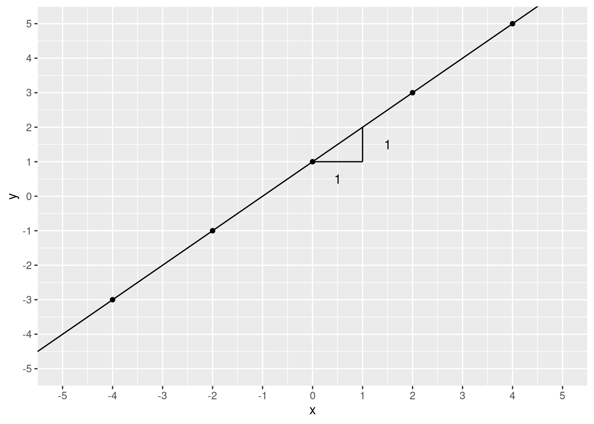
What happens if we change the slope? We’ll change it to 3. First, let’s see if we can predict \(y\) if \(x\) is 1, slope is 3 (intercept remains the same).
slope <- 3
intercept <- 1
xval <- 1
y_predict <- slope * xval + intercept
y_predict## [1] 4Let’s check the plot.
ggplot(data.frame(x, y), aes(x, y)) +
geom_point() +
geom_abline(slope = 1, intercept = 1) +
geom_abline(slope = 3, intercept = 1, color = "blue", linetype = 2) +
scale_x_continuous(breaks = c(seq(from = -5, to = 5, by = 1))) +
scale_y_continuous(breaks = c(seq(from = -5, to = 5, by = 1))) +
coord_cartesian(ylim = c(-5, 5), xlim = c(-5, 5)) +
annotate(geom = "segment", x = 0, xend = 1, y = 1, yend = 1) +
annotate(geom = "text", x = 0.5, y = 0.5, label = "1") +
annotate(
geom = "segment", x = 1, xend = 1, y = 1, yend = 4,
color = "blue", linetype = 2
) +
annotate(geom = "text", x = 1.2, y = 2.5, label = "3", color = "blue") +
annotate(
geom = "segment", x = 1, xend = -6, y = 4, yend = 4,
linetype = 3, color = "blue"
)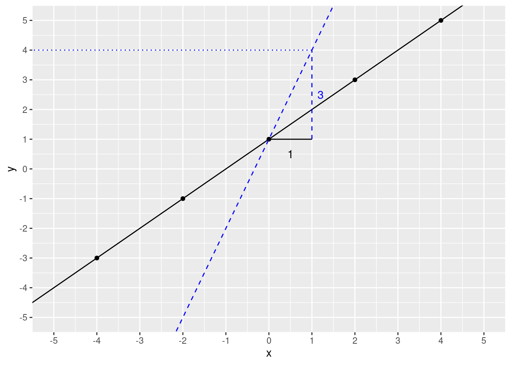
If you understand this, you already have a nice foundation for understanding linear regression. To demonstrate let’s run a model on some simulated data.
x <- rnorm(50, mean = 0, sd = 1)
y <- x + rnorm(50, mean = 3, sd = 0.5)
xx <- data.frame(
x = x,
y = y
)
ggplot(xx, aes(x, y)) +
geom_point()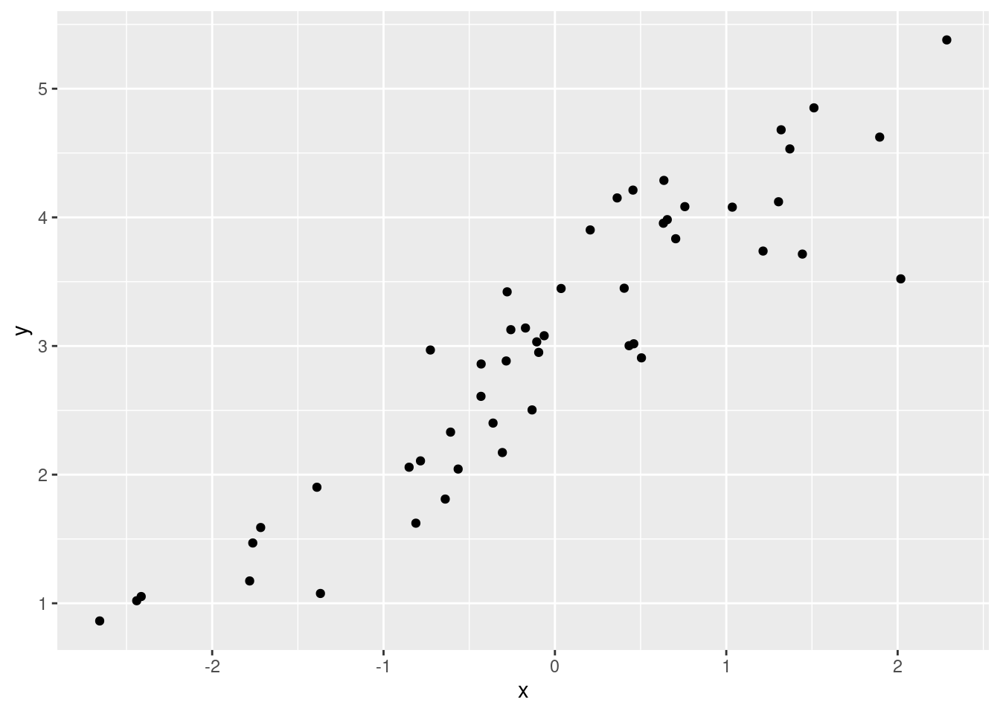
mod <- lm(y ~ x, data = xx)
summary(mod)##
## Call:
## lm(formula = y ~ x, data = xx)
##
## Residuals:
## Min 1Q Median 3Q Max
## -1.3497 -0.3055 0.0916 0.3006 0.7758
##
## Coefficients:
## Estimate Std. Error t value Pr(>|t|)
## (Intercept) 3.04693 0.06420 47.46 <2e-16 ***
## x 0.90399 0.05629 16.06 <2e-16 ***
## ---
## Signif. codes: 0 '***' 0.001 '**' 0.01 '*' 0.05 '.' 0.1 ' ' 1
##
## Residual standard error: 0.4537 on 48 degrees of freedom
## Multiple R-squared: 0.8431, Adjusted R-squared: 0.8398
## F-statistic: 257.9 on 1 and 48 DF, p-value: < 2.2e-16Again, there’s a lot of information here and it looks pretty daunting. Let’s just focus on a very small part. You’ll notice the word “Intercept” is in the model summary. It’s under the Coefficients: heading.
The word Estimate might be familiar. If you don’t remember hearing that word, think back to the t-tests where “Estimate” referred to the mean. An estimate is just that: an estimate of the value that you are interested in.
The term coefficient is a mathy way to say a number that is multiplied by a variable. In \(6 = 2f\), 2 is a coefficient and \(f\) is a variable.
Let’s get these estimates and plot them.
mod$coefficients## (Intercept) x
## 3.0469259 0.9039917ggplot(xx, aes(x, y)) +
geom_point() +
geom_abline(
slope = mod$coefficients[2],
intercept = mod$coefficients[1]
)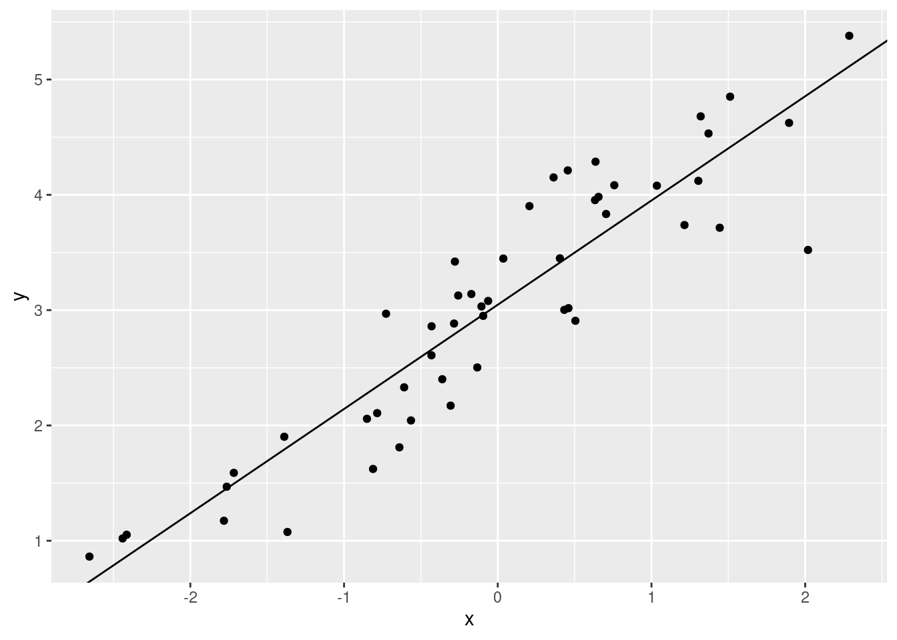
The coefficients in the linear model output are the slope and intercept for our linear regression model. mod$coefficients[1] is the \(y\) value when the regression line crosses 0 on the x-axis. mod$coefficients[2] is the amount that \(y\) increases when we increase \(x\) by one unit.
Of course, if all of data points fit on a perfect line our lives would be a lot easier. In the last example, you’ll notice that most of the points didn’t fall directly on the regression line. You also might have wondered, how the lm() function chose the slope and intercept. Remember how we calculated the standard deviation by taking calculating the difference from the data point and the mean? We calculated the “deviances” from the model (the mean). A similar method is used to create a linear model. In regression, the differences between the model and the actual data are called residuals. The linear model that has the lowest sum of squared residuals is the model we use for our data (method of least squares).
x <- seq(from = 1, to = 10, by = 1)
y <- c(2, 1, 5, 4, 3, 7, 4, 6, 10, 14)
ggplot(data.frame(x, y), aes(x, y))+
geom_point()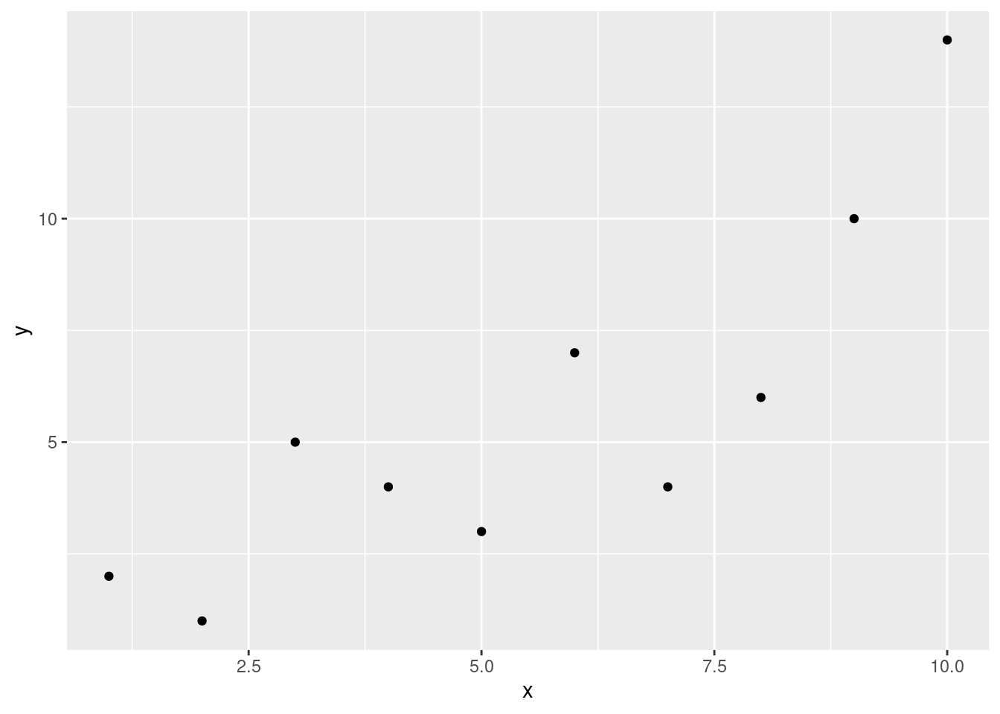
slope1 <- 1
intercept1 <- -0.5
slope2 <- 2
intercept2 <- -0.5
slope3 <- 1
intercept3 <- 2
fit1 <- (slope1 * x) + intercept1
fit2 <- (slope2 * x) + intercept2
fit3 <- (slope3 * x) + intercept3ggplot(data.frame(x, y), aes(x, y)) +
geom_point() +
geom_abline(
slope = slope1, intercept = intercept1,
color = "sky blue", linetype = 2
) +
geom_segment(aes(
x = x, xend = x,
y = y, yend = fit1
),
color = "sky blue"
)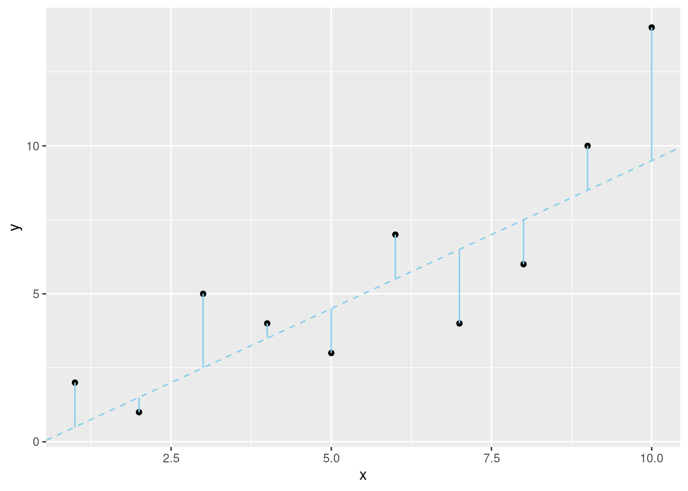
ggplot(data.frame(x, y), aes(x, y)) +
geom_point() +
geom_abline(
slope = slope2, intercept = intercept2,
color = "orange", linetype = 3
) +
geom_segment(aes(
x = x, xend = x,
y = y, yend = fit2
),
color = "orange"
)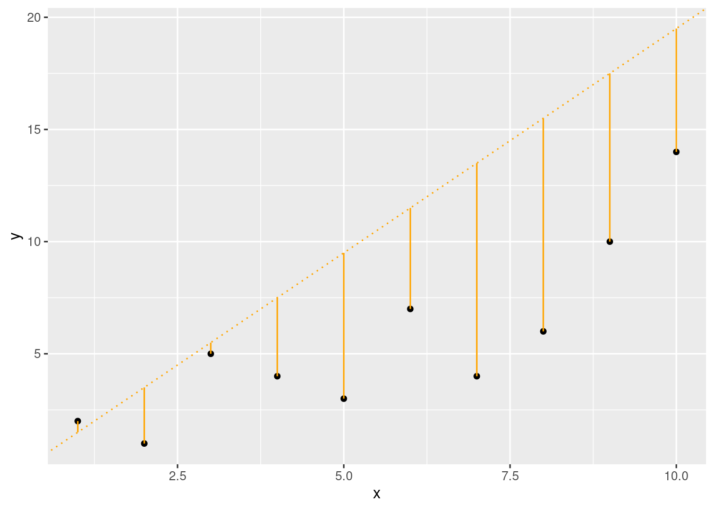
ggplot(data.frame(x, y), aes(x, y)) +
geom_point() +
geom_abline(
slope = slope3, intercept = intercept3,
color = "blue", linetype = 4
) +
geom_segment(aes(
x = x, xend = x,
y = y, yend = fit3
),
color = "blue"
)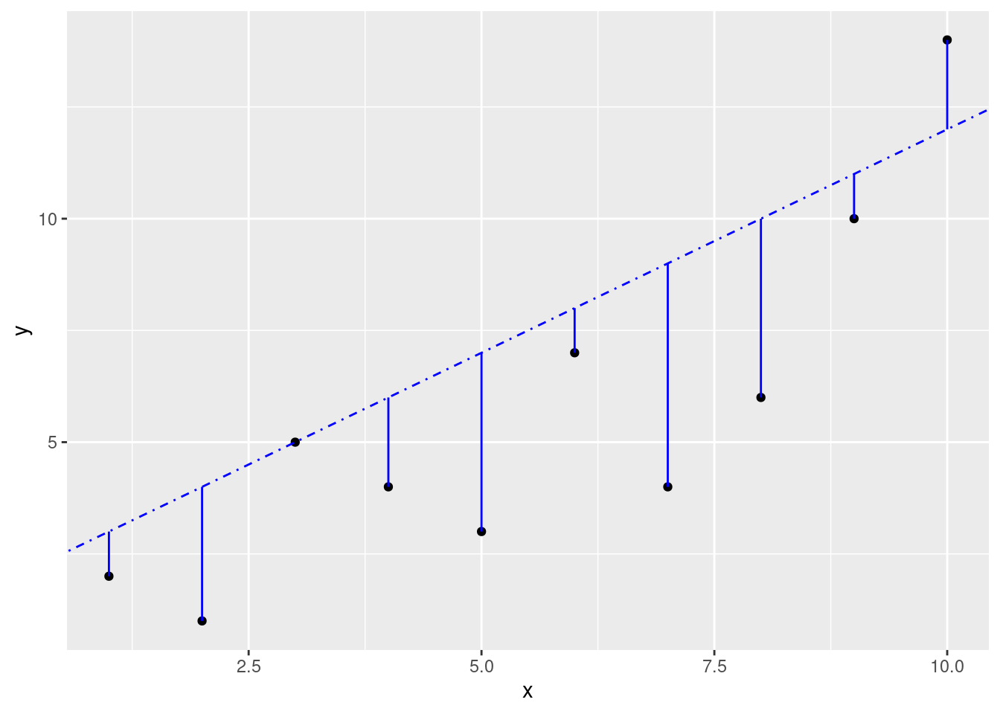
If you wanted, you could calculate this yourself, but it would be a pretty mind-numbing task. Luckily, linear regression functions will find the best fit line for you.
Be aware, however, just because R will find a “best” fit, that doesn’t mean that a linear model is a good fit and will give you useful information.
x <- seq(from = -.25, to = 1.25 * pi, length.out = 50)
y <- cos(x)
ggplot(data.frame(x, y), aes(x, y)) +
geom_point()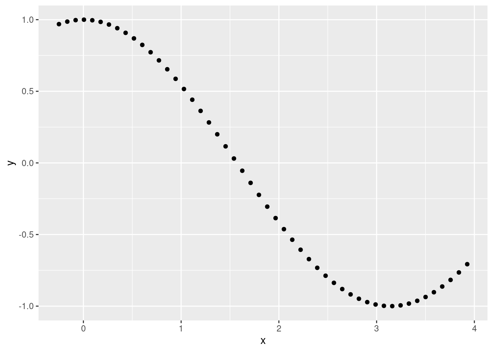
cosmod <- lm(y ~ x)
summary(cosmod)##
## Call:
## lm(formula = y ~ x)
##
## Residuals:
## Min 1Q Median 3Q Max
## -0.3040 -0.1952 -0.0001 0.1600 0.6345
##
## Coefficients:
## Estimate Std. Error t value Pr(>|t|)
## (Intercept) 0.98326 0.05775 17.03 <2e-16 ***
## x -0.59202 0.02611 -22.68 <2e-16 ***
## ---
## Signif. codes: 0 '***' 0.001 '**' 0.01 '*' 0.05 '.' 0.1 ' ' 1
##
## Residual standard error: 0.2271 on 48 degrees of freedom
## Multiple R-squared: 0.9146, Adjusted R-squared: 0.9129
## F-statistic: 514.3 on 1 and 48 DF, p-value: < 2.2e-16ggplot(data.frame(x, y), aes(x, y)) +
geom_point() +
geom_abline(slope = cosmod$coefficients[2], intercept = cosmod$coefficients[1])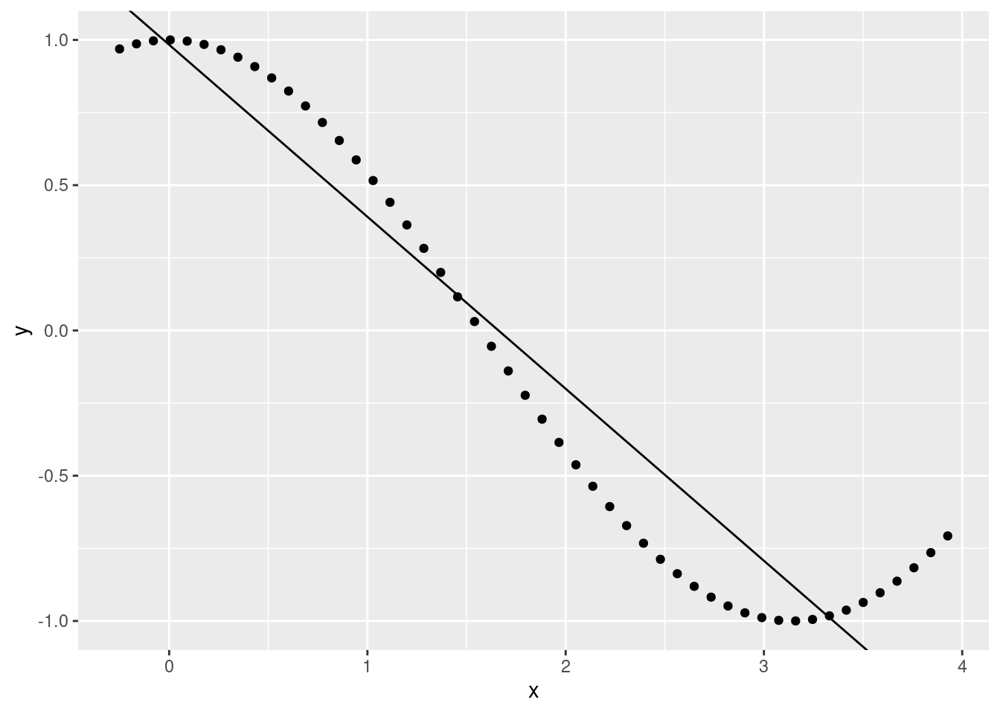
x <- rnorm(n = 50, mean = 0, sd = 1)
y <- x + rnorm(n = 50, mean = 0, sd = 1)
y[33:36] <- rnorm(n = 4, mean = 40, sd = 1)
ggplot(data.frame(x, y), aes(x, y)) +
geom_point()outmod <- lm(y ~ x)
summary(outmod)##
## Call:
## lm(formula = y ~ x)
##
## Residuals:
## Min 1Q Median 3Q Max
## -7.850 -4.262 -2.835 -1.375 41.653
##
## Coefficients:
## Estimate Std. Error t value Pr(>|t|)
## (Intercept) 3.468 1.577 2.199 0.0327 *
## x 2.790 1.695 1.646 0.1062
## ---
## Signif. codes: 0 '***' 0.001 '**' 0.01 '*' 0.05 '.' 0.1 ' ' 1
##
## Residual standard error: 11 on 48 degrees of freedom
## Multiple R-squared: 0.05345, Adjusted R-squared: 0.03373
## F-statistic: 2.71 on 1 and 48 DF, p-value: 0.1062ggplot(data.frame(x, y), aes(x, y)) +
geom_point() +
geom_abline(slope = outmod$coefficients[2], intercept = outmod$coefficients[1])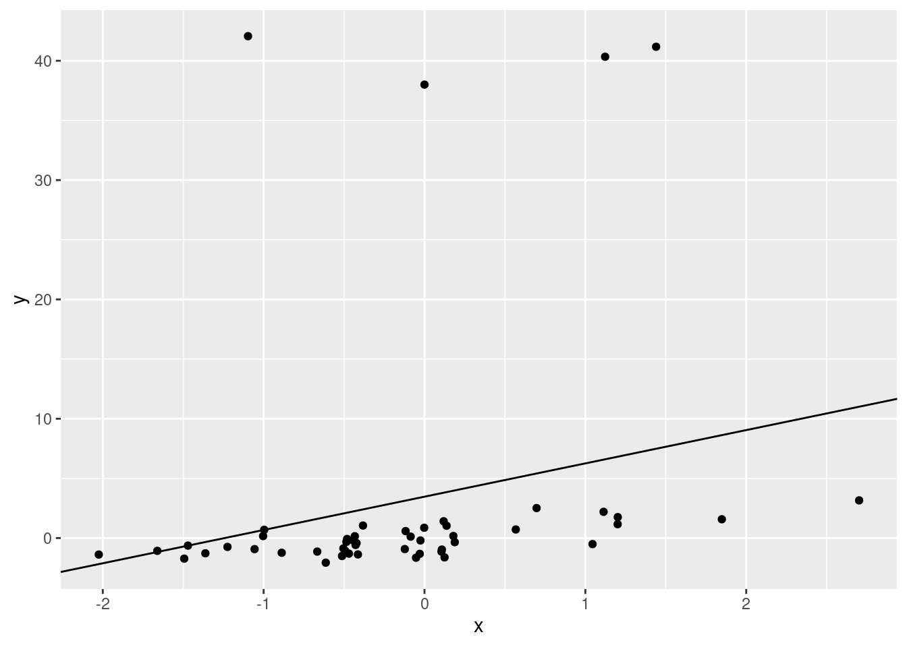
There will always be error associated with your model, but you should plot your data beforehand to assess whether you can use a model. After you run the model, you should check that the model fit. We’ll walk through that now.
Let’s go back to working with some wug data.
wug_forage_pop <- read.csv('../data/wug_forage.csv', header = T)
index <- sample(nrow(wug_forage_pop), 100)
sample <- wug_forage_pop[index,]hist(sample$time_foraging)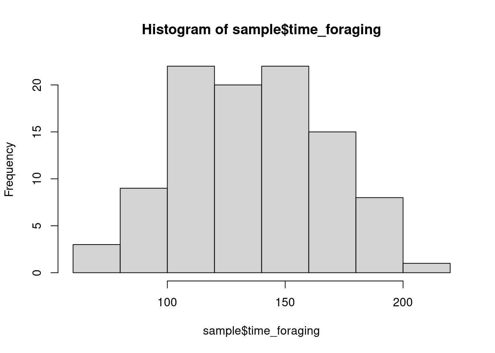
hist(sample$food_gathered)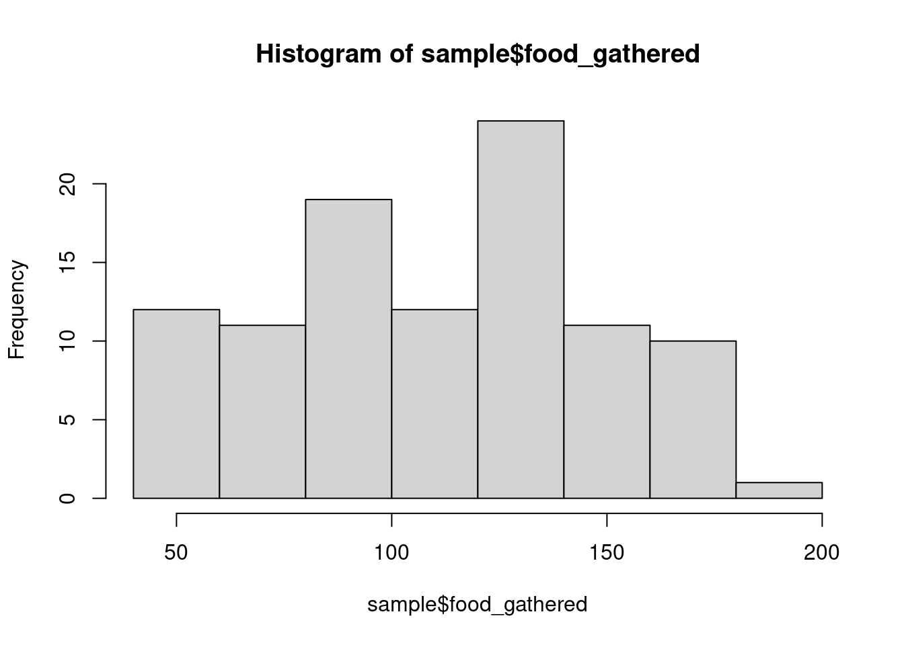
How do these distributions look to you?
What are you looking for? Mainly any weird outliers or anything that could indicate some error in data collection/transcription (e.g., time value that is below 0). The distribution matters, but not as much as you might think. Depending on the distribution, you may need to transform data, but linear models don’t make assumptions about the normality of the response (and less so the predictors). We are concerned with normality, but the normality of residuals, which we’ll discuss later. We won’t transform anything right now, but we’ll discuss transformation a bit later.
What do you think? To plot or not to plot
You’ll notice that I haven’t actually plotted the time foraging data against the amount foraged. This runs counter to some advice that you will hear (from me even!). There are statisticians who argue against plotting your data beforehand (outside of inspecting data quality). Why might they advise against this? Is it realistic to expect people to not plot before testing?
Let’s run the model. By now, you’ve seen this a few times, but let’s discuss the organization of the arguments in the lm() function. The first argument is formula =. In this argument you’ll put your response and predictors (and later, interactions, random effects, etc). The first element in the formula is the response (dependent variable). The response is followed by ~. In this formula, the ~ symbol can be interpreted as “is predicted by”. After this, you include your predictors. In a simple linear regression, we have just one predictor, but you can add more (“multiple regression”). You are also not limited to numeric predictors. In multiple regression you can estimate how a response is affected by categorical and/or numeric predictors. To add more predictors, don’t use a comma, but rather, use +. e.g., formula = y ~ weight + treatment + age
mod <- lm(food_gathered ~ time_foraging, data = sample)OK, we have our model. It’s tempting to print the full summary now, but let’s make sure that we have a valid model first.
We first want to check that the errors in the model are unbiased. Again, in any random sample we will have error. But if we truly have a random sample, the error should be random as well (Central Limit Theorem back again). We can plot the residuals in a histogram.
hist(residuals(mod), probability = T)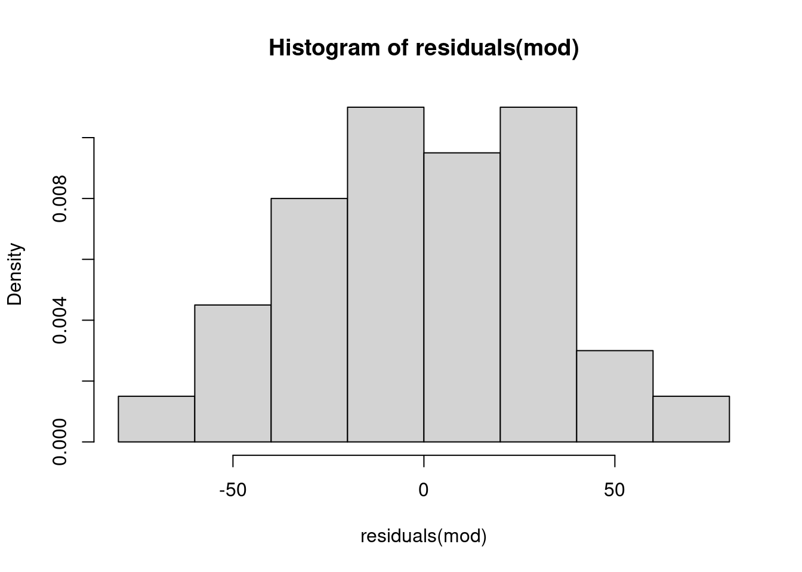
We can also use a QQ plot. A Q-Q plot orders the actual values of the residuals and plots them against theoretical values that would come from a normal distribution.
qqnorm(residuals(mod))
qqline(residuals(mod))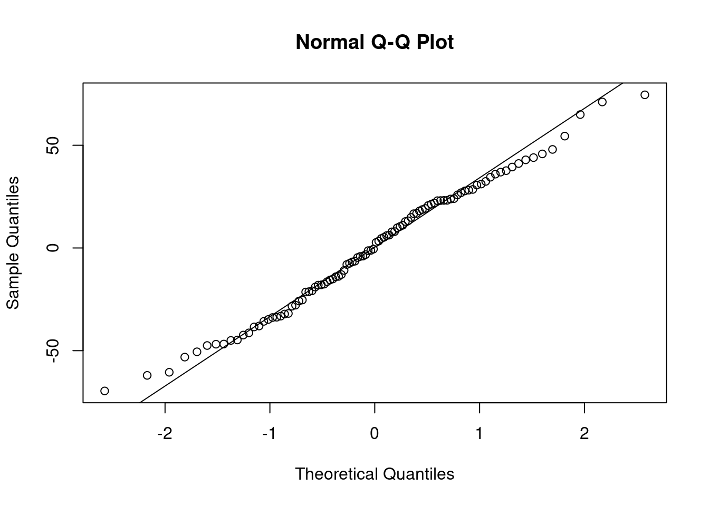
The values should fit to a pretty clear line. The qqline() function helps you visually inspect the fit. There is no clear cut-off for a good fit or poor fit.
You can check it yourself by doing the following
q <- seq(0.01, 0.99, length.out = length(mod$residuals))
plot(qnorm(q), as.vector(sort(mod$residuals)))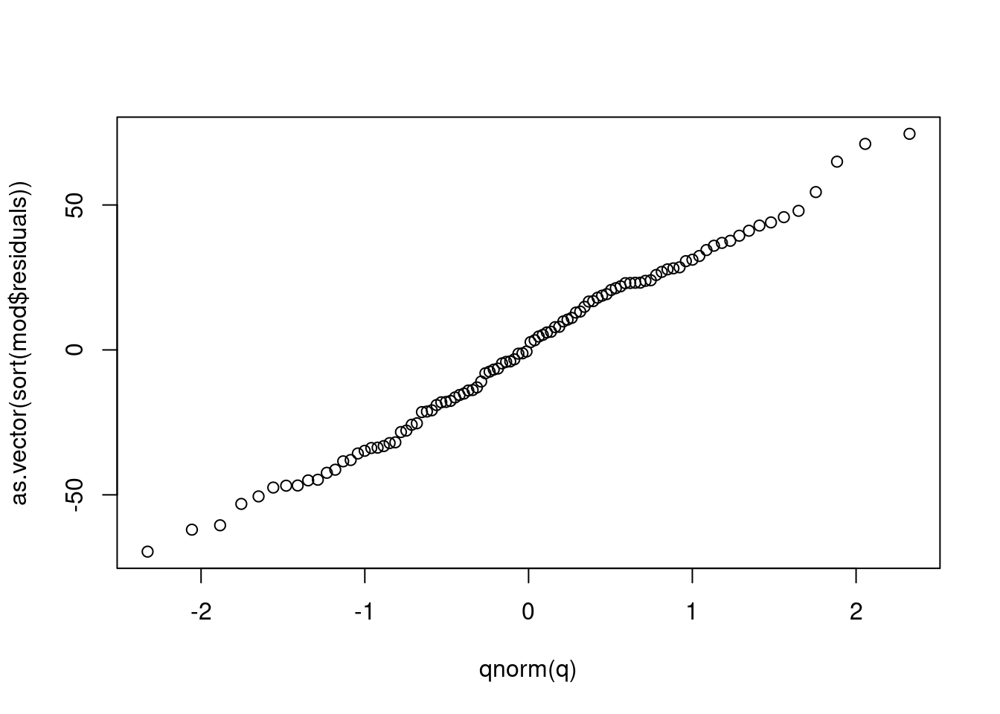
Homogeneity You should also plot the fitted values with the residuals to make sure that there are no clear patterns in the residuals.
fitres <- data.frame(residuals = mod$residuals,
fitted_val = mod$fitted.values
)
ggplot(fitres, aes(fitted_val, residuals)) +
geom_point()+
geom_abline(slope = 0, intercept = 0)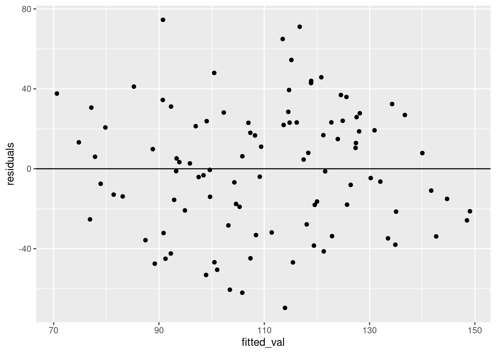
There are some other checks that are a bit beyond this course. These check the stability of the model by removing observations and rerunning the model to assess how much the coefficients change.
max(abs(dffits(mod)))## [1] 0.3604946max(cooks.distance(mod))## [1] 0.06186608OK, so this model isn’t too bad. The residuals are maybe a bit large in the context of our question, but we shouldn’t throw it out.
Let’s plot the data so that we have a better idea of what our model tells us.
ggplot(data = sample, aes(time_foraging, food_gathered))+
geom_point()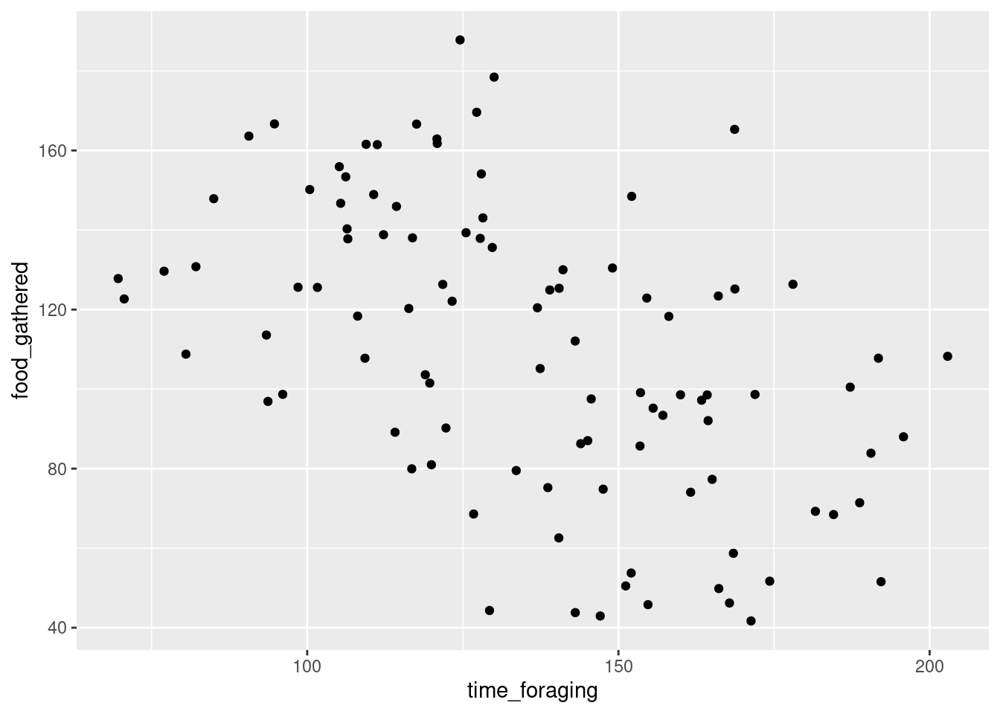
What do you think?
Let’s get the model summary!
summary(mod)##
## Call:
## lm(formula = food_gathered ~ time_foraging, data = sample)
##
## Residuals:
## Min 1Q Median 3Q Max
## -69.601 -22.418 1.072 23.174 74.557
##
## Coefficients:
## Estimate Std. Error t value Pr(>|t|)
## (Intercept) 190.0487 14.3528 13.24 < 2e-16 ***
## time_foraging -0.5887 0.1031 -5.71 1.21e-07 ***
## ---
## Signif. codes: 0 '***' 0.001 '**' 0.01 '*' 0.05 '.' 0.1 ' ' 1
##
## Residual standard error: 31.72 on 98 degrees of freedom
## Multiple R-squared: 0.2496, Adjusted R-squared: 0.242
## F-statistic: 32.6 on 1 and 98 DF, p-value: 1.212e-07As we saw with the other tests, the first line repeats the test you ran. Check to make sure everything is kosher.
Summary statistics of the residuals. The minimum, maximum, median, first, and third quartile residual values.
For the simple linear regression, these estimate values are the intercept and slope. What do these values mean in the context of our data? The intercept is the amount of food gathered if the time spent foraging were 0. That doesn’t really make a lot of sense, does it? This is often the case. The intercept often doesn’t make real world sense.
Tough questions
Any ideas on how to make the intercept interpretable?
The second estimate is the slope. For every unit increase in time_foraging the amount of food gather changes by -0.5887203. Again, this doesn’t make a lot of sense, right? Well, unlike the intercept, the slope should be somewhat interpretable. At the very least, the direction. Our model is telling us that the more time that a wug spends foraging the less food they gather. That’s weird. But it is consistent with our plot. There does seem to be a negative relationship between the two variables.
What are these other values?
Standard error. The error of our estimates. We saw standard error of estimates when we looked at confidence intervals of the mean. We can also use these values to get the t-values which can get a p-value. What do the t-values and p-values tell us? As with the other test, they tell us the probability that we could obtain these estimates at least this extreme if the true population estimate were 0.
The slope values are usually pretty important. A slope of 0 would mean that there is no correlation between the two variables and that if you increase the amount of time foraging, you should see no change in the amount of food gathered.
The importance of the intercept values are a bit less straight-forward and can often be meaningless (not always though!) In this case, it’s not very meaningful at all.
Tough questions
Can you think of a test where testing the intercept might be meaningful?
#### Standard error, R-squared, and F-statistic
summary(mod)##
## Call:
## lm(formula = food_gathered ~ time_foraging, data = sample)
##
## Residuals:
## Min 1Q Median 3Q Max
## -69.601 -22.418 1.072 23.174 74.557
##
## Coefficients:
## Estimate Std. Error t value Pr(>|t|)
## (Intercept) 190.0487 14.3528 13.24 < 2e-16 ***
## time_foraging -0.5887 0.1031 -5.71 1.21e-07 ***
## ---
## Signif. codes: 0 '***' 0.001 '**' 0.01 '*' 0.05 '.' 0.1 ' ' 1
##
## Residual standard error: 31.72 on 98 degrees of freedom
## Multiple R-squared: 0.2496, Adjusted R-squared: 0.242
## F-statistic: 32.6 on 1 and 98 DF, p-value: 1.212e-07Residual standard error: This value gives you information on the quality of the fit. This value is the average deviation from the regression line for the response variable. So, we have an average of 31.7202735 kgs.
We’ve seen degrees of freedom as \(n - 1\) before, but now we have an n of 100 but degrees of freedom of 98. What gives? We remove a degree of freedom for each parameter in our model. One degree of freedom for the slope and one for the intercept.
Multiple R-squared: This value is the amount of variation explained by our model. Our \(R^2\) value seems kind of low. Especially given the relationship we are addressing. Adjusted R-squared has a similar interpretation but it’s calculation includes a cost for the number of parameters in the model.
F-statistic: If you’ve ever run an ANOVA, you’ve probably seen an F-statistic. This tests the model as a whole and whether or not the regression slope is statistically different from 0. So in the case of a single numeric predictor we would expect the p-value for the f-test and the t-test to be the same. When there are multiple slopes, the f-test will tell you if at least one of the slopes is statistically different from 0.
Calculating the Residual standard error and R-Squared.
set.seed(111)
x <- rnorm(10, mean = 50, sd = 2)
y <- rnorm(10, mean = 20, sd = 2)
mod <- lm(y ~ x)
summary(mod)##
## Call:
## lm(formula = y ~ x)
##
## Residuals:
## Min 1Q Median 3Q Max
## -2.8935 -0.6997 -0.1751 0.7643 3.8401
##
## Coefficients:
## Estimate Std. Error t value Pr(>|t|)
## (Intercept) 24.8247 21.2795 1.167 0.277
## x -0.1007 0.4371 -0.230 0.824
##
## Residual standard error: 2.058 on 8 degrees of freedom
## Multiple R-squared: 0.006595, Adjusted R-squared: -0.1176
## F-statistic: 0.05311 on 1 and 8 DF, p-value: 0.8235What does the model predict?
mod$fitted.values## 1 2 3 4 5 6 7 8
## 19.74101 19.85503 19.85118 20.25221 19.82282 19.76014 20.09006 19.99190
## 9 10
## 19.97947 19.88791What is the error?
mod$residuals## 1 2 3 4 5 6
## -0.08836035 -0.66822379 3.84009649 0.53589357 1.77223515 -2.89346934
## 7 8 9 10
## -0.26176262 -0.71018354 -2.36669023 0.84046466xx <- data.frame(x, y,
fit = mod$fitted.values,
res = mod$residuals
)
ggplot(xx, aes(x = x, y = y)) +
geom_point()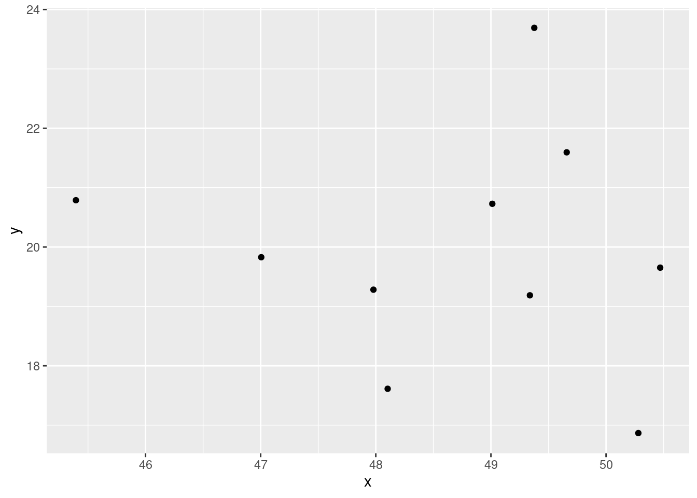
ggplot(xx, aes(x = x, fit)) +
geom_point()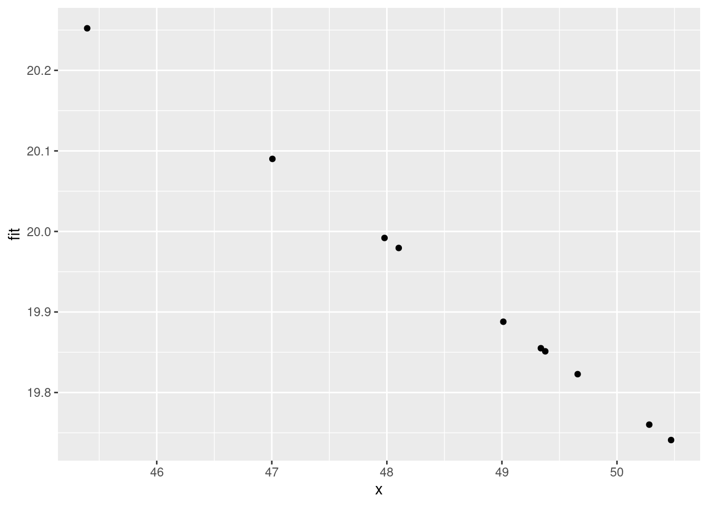
ggplot(xx) +
geom_jitter(aes(x = x, y = fit + res, color = "blue"), width = 0.1) +
geom_point(aes(x = x, y = y, color = "red"))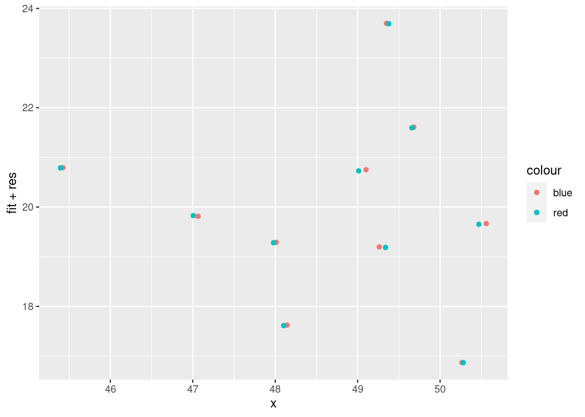
ggplot(xx) +
geom_point(aes(x = x, y = fit, color = "blue")) +
geom_point(aes(x = x, y = y, color = "red"))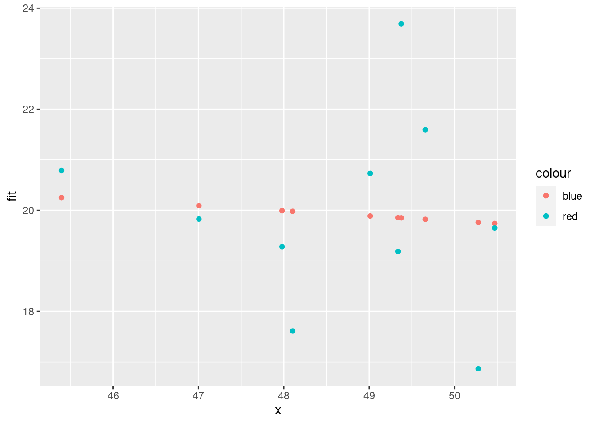
ggplot(xx) +
geom_point(aes(x = x, y = fit, color = "blue")) +
geom_point(aes(x = x, y = y, color = "red")) +
geom_segment(aes(
x = x, xend = x,
y = y, yend = fit
)) +
geom_abline(slope = mod$coefficients[2], intercept = mod$coefficients[1])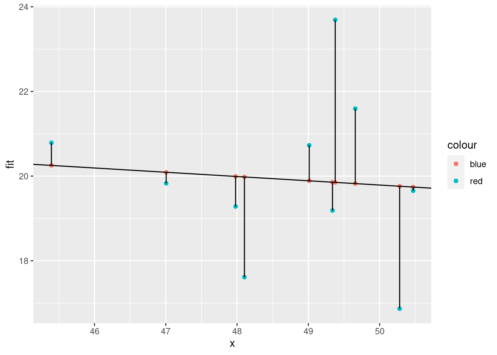
How to calculate
Square residuals
mod$residuals^2## 1 2 3 4 5 6
## 0.007807551 0.446523039 14.746341050 0.287181919 3.140817423 8.372164839
## 7 8 9 10
## 0.068519670 0.504360660 5.601222621 0.706380847Residual sum of squares (AKA residual sum of squares and sum of squared estimate errors)
ssr <- sum(mod$residuals^2)
ssr## [1] 33.88132ggplot(xx) +
geom_point(aes(x = x, y = y, color = "red")) +
geom_segment(aes(
x = x, xend = x,
y = y, yend = mean(y)
)) +
geom_abline(slope = 0, intercept = mean(y)) 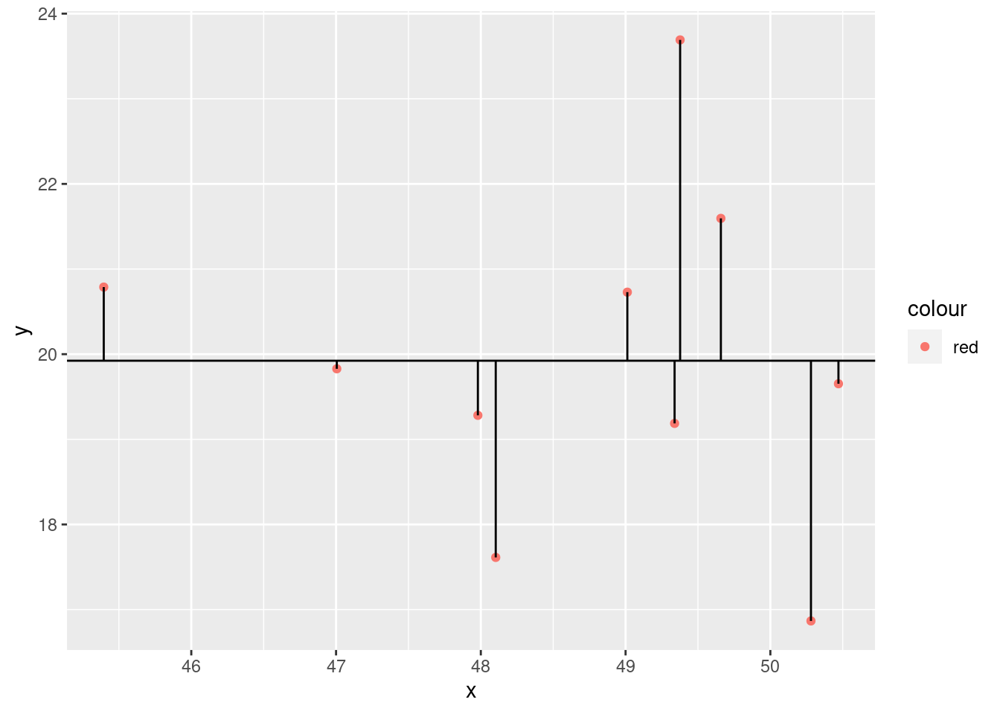
ggplot(xx) +
geom_point(aes(x = x, y = mean(y), color = "blue")) +
geom_point(aes(x = x, y = y, color = "red")) +
geom_segment(aes(
x = x, xend = x,
y = fit, yend = mean(y)
)) +
geom_abline(slope = 0, intercept = mean(y), linetype = 3) +
geom_abline(
slope = mod$coefficients[2], intercept = mod$coefficients[1],
linetype = 2
)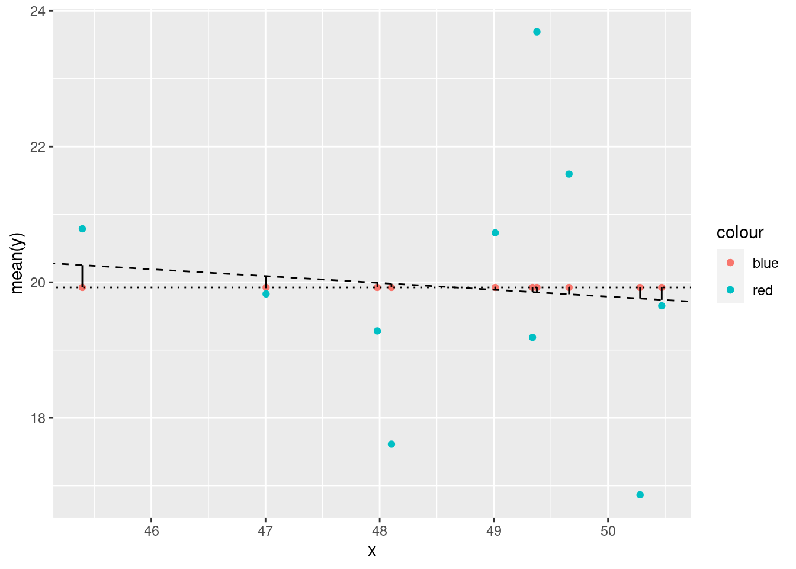
We compare the model to the most basic model, the mean. Calculate the deviances
y - mean(y)## [1] -0.2705218 -0.7363711 3.7680990 0.8649346 1.6718834 -3.0565043
## [7] -0.0948756 -0.6414525 -2.3103915 0.8051999Square them
(y - mean(y))^2## [1] 0.073182062 0.542242452 14.198569698 0.748111936 2.795194187
## [6] 9.342218523 0.009001379 0.411461361 5.337908932 0.648346873Then get the sum.
sst <- sum((y - mean(y))^2)
sst## [1] 34.10624Now we can calculate the model sum of squares
sst - ssr## [1] 0.2249178(sst - ssr)/sst## [1] 0.006594623Why did we do this?
summary(mod)$r.squared## [1] 0.006594623We just calculated the R2
Now F stat
ssm <- (sst - ssr)
n <- length(y)
k <- length(mod$coefficients)-1
(ssm/k)/(ssr/(n-(k+1)))## [1] 0.05310721sqrt(ssr/(n-(1+k)))## [1] 2.057952================================================================================
Last update on 2021-11-10
sessionInfo()## R version 4.1.2 (2021-11-01)
## Platform: x86_64-pc-linux-gnu (64-bit)
## Running under: Ubuntu 20.04.3 LTS
##
## Matrix products: default
## BLAS: /usr/lib/x86_64-linux-gnu/blas/libblas.so.3.9.0
## LAPACK: /usr/lib/x86_64-linux-gnu/lapack/liblapack.so.3.9.0
##
## locale:
## [1] LC_CTYPE=en_US.UTF-8 LC_NUMERIC=C
## [3] LC_TIME=de_AT.UTF-8 LC_COLLATE=en_US.UTF-8
## [5] LC_MONETARY=de_AT.UTF-8 LC_MESSAGES=en_US.UTF-8
## [7] LC_PAPER=de_AT.UTF-8 LC_NAME=C
## [9] LC_ADDRESS=C LC_TELEPHONE=C
## [11] LC_MEASUREMENT=de_AT.UTF-8 LC_IDENTIFICATION=C
##
## attached base packages:
## [1] stats graphics grDevices utils datasets methods base
##
## other attached packages:
## [1] dplyr_1.0.7 ggplot2_3.3.5
##
## loaded via a namespace (and not attached):
## [1] highr_0.9 bslib_0.2.5.1 compiler_4.1.2 pillar_1.6.4
## [5] jquerylib_0.1.4 tools_4.1.2 digest_0.6.28 jsonlite_1.7.2
## [9] evaluate_0.14 lifecycle_1.0.1 tibble_3.1.5 gtable_0.3.0
## [13] pkgconfig_2.0.3 rlang_0.4.12 DBI_1.1.1 yaml_2.2.1
## [17] xfun_0.27 withr_2.4.2 stringr_1.4.0 knitr_1.36
## [21] generics_0.1.1 sass_0.4.0 vctrs_0.3.8 grid_4.1.2
## [25] tidyselect_1.1.1 glue_1.4.2 R6_2.5.1 fansi_0.5.0
## [29] rmarkdown_2.9 farver_2.1.0 purrr_0.3.4 magrittr_2.0.1
## [33] scales_1.1.1 ellipsis_0.3.2 htmltools_0.5.1.1 assertthat_0.2.1
## [37] colorspace_2.0-2 labeling_0.4.2 utf8_1.2.2 stringi_1.7.5
## [41] munsell_0.5.0 crayon_1.4.2================================================================================
Copyright © 2021 Dan C. Mann. All rights reserved.